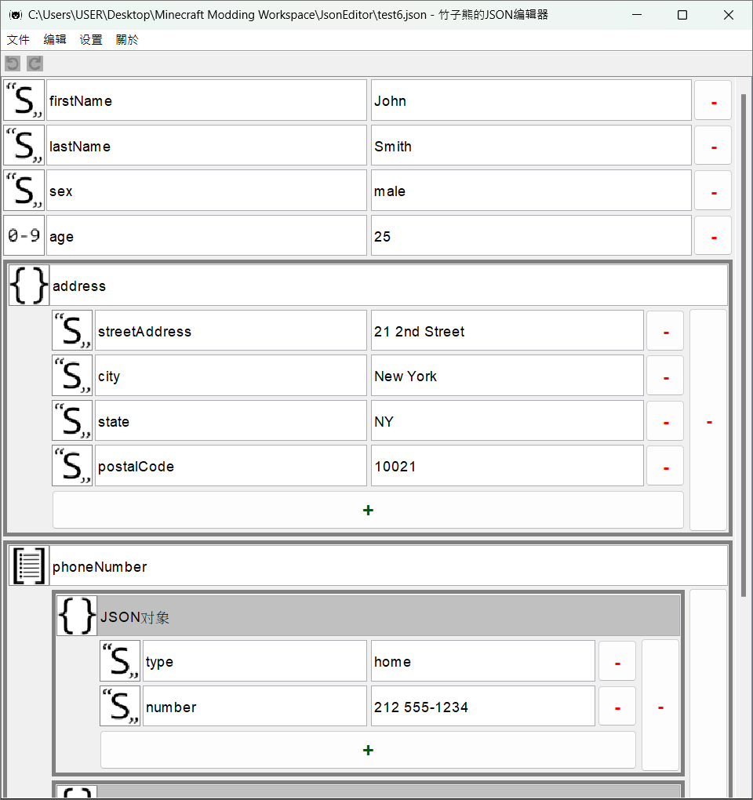

竹子熊的JSON编辑器
版本：0.1.0 (Beta)
版本：0.1.0 (Beta)
竹子熊的JSON编辑器（以下简称“JSON编辑器”）是一款由Java写成，用于编辑JSON格式档案的程序。
JSON，全称JavaScript Object Notation，是一种独立于编程语言（即便全称包含JavaScript）、轻量级的数据交换格式，应用十分广泛。
JSON拥有六种数据类型：布尔值、数值、字符串、空值、对象跟数组（参见：https://www.json.org/json-zh.html），其中对象跟数组还可以再包含其他JSON元素。通常一个JSON文件会以对象或数组为根元素，其中可能再包含多个对象或数组，并可能形成复杂的数据结构，此时，使用“JSON编辑器”开启他，也许是个不错的选择。
透过“JSON编辑器”，就可以非常清楚的看到JSON文件中的数据结构（如上图）。此外，透过“JSON编辑器”编辑文件，还可以避免遗漏标点符号导致格式错误等问题。
“JSON编辑器”在读写文件时，均使用“UTF-8”编码。如果文件的编码不是UTF-8，使用“JSON编辑器”开启后，可能会出现乱码（尤其是包含非ASCII字符的文件），需特别注意。
在版本0.1.0之前，“JSON编辑器”不会支援JSON当中的null（空值），所有null在程式内均会被转换为JSON字符串"null"，且没有任何方法可以在“JSON编辑器”中添加“空值”
如果JSON文件中有null，且其具有高度重要性时，不建议在“JSON编辑器”能够支援之前，使用程序开启文件，甚至进行编辑并保存。
任何元素都能作为JSON文件的“根元素”，然而，“JSON编辑器”只允许“JSON对象”和“JSON数组”作为根元素。
当在“JSON编辑器”里开始编辑新的JSON文件时，根元素始终是“JSON对象”。只有打开根元素时“JSON数组”的JSON文件时，根元素才会变成“JSON数组”。
如果你在“JSON编辑器”中发现任何问题，请到https://github.com/BambooBear0413/JsonEditor/issues回报。
JSON的字符串（包含键）有转义序列，用于表示一些控制字符（如换行、Tab等），或双引号（"）、反斜线（\）等有其他含义的字符。
虽然使用“JSON编辑器”编辑JSON字符串，像双引号（"）就不需要使用\"代替，然而大部分在JSON字符串中应用转义序列代表的字符（如：换行等）即使在“JSON编辑器”中也没办法直接输入。因此在“JSON编辑器”中编辑JSON字符串（包含键）时，亦有转义序列。
在“JSON编辑器”里编辑JSON字符串时所有可用的转义序列如下：
\\：\本身。\b：退格符（U+0008）。\f：换页符（U+000C）。\n：换行符（U+000A）。\r：回车（U+000D）。\t：水平制表符（U+0009）。\uXXXX（XXXX为四位十六进制数字）：UTF-16编码中，XXXX所代表的字符。当\字符后紧邻的字符不包含以上任何一种（甚至没有字符），就会输出“\\”（在JSON字符串中代表\本身）以及紧邻字符本身（如果有）。
\和\\的输出结果都是\\。\u718A的输出结果是熊（U+718A），而\u718的输出结果是\\u718。\a的输出结果是\\a。如果JSON字符串（包含键）有使用到\这个字符本身本身，仍建议一律使用\\表示，避免意外发生。
| 快捷键 | 动作 | 备注 |
|---|---|---|
| Ctrl + Z | 撤销 | |
| Ctrl + Y | 重做 | |
| Ctrl + N | 新建文件 | |
| Ctrl + O | 打开文件 | |
| Ctrl + S | 保存文件 | |
| Ctrl + Shift + S | 另存为新文件 |
“JSON编辑器”需要Java 21以上版本才能运行，如果你的计算机没有安装Java 21或更高版本，可以考虑从以下两个地方取得（两者可能略有不同，但不影响“JSON编辑器”运行）：
如果计算机已经有安装Java，或者刚安装完，可以打开命令行（如Windows系统中的cmd），输入命令java --version，即可检查Java版本。
en_us） *默认语言zh_tw）zh_cn）settings.properties）“JSON编辑器”的设置保存于settings.properties文件中，可以在程序内透过设置页面更改，也可以从外部更改（不建议这么做）。
目前settings.properties中的所有设置如下表，当中所有设置皆可于程序内更改（有些设置需要“启用实验性内容”才能于程序内更改）。
| 键 | 类型 | 默认值 | 备注 |
|---|---|---|---|
language |
语言代码 | en_us |
|
isExperimentalFeaturesEnabled |
布尔值 | false |
是否启用实验性内容。须重启程序，变更才会生效。 |
fontFamily |
字族名称 | Dialog |
Dialog是Java默认字族的名称。实验性内容 |
fontSize |
整数值 | 15 |
字体大小。最小值为8，最大值为28。 |
enablesPrettyPrinting |
布尔值 | false |
相较于禁用时，启用此项后保存的JSON文件可读性较高（经过排版），但文件大小会稍大。 |
enablesHtmlEscaping |
布尔值 | false |
启用此项后，保存JSON文件时，会将=、>、<等于HTML中有特殊功能的字符转成转义序列。 |
enablesUnicodeEscaping |
布尔值 | false |
启用此项后，保存JSON文件时，会将“非ASCII字符”转成Unicode转义序列。实验性内容 |
如果“JSON编辑器”启动时在settings.properties文件中发现“未知设置”，会特别纪录。当使用者于程序内更改设置并应用时，程序会覆写该文件，而先前特别保存的“位置设定”便可保留在文件中（位于注释“Unknown properties”之下）。settings.properties文件中的“注释”则无此机制（会与覆写后消失）。
“JSON编辑器”中的插件类似知名游戏Minecraft中的数据包，可以透过不需撰写任何代码的情况下，添加部分功能或内容到“JSON编辑器”中。
插件可以是一个文件夹，或一个ZIP压缩文件（扩展名必须是.zip），其中包含plugin.json。
插件必须放在“plugins”文件夹（首次开启“JSON编辑器”时会自动创建）或其中的文件夹里。
“JSON编辑器”在搜寻插件时，会读取“plugins”文件夹以下的所有文件夹及ZIP压缩文件。如果文件夹中找到plugin.json，则该文件夹将视为插件文件，否则“JSON编辑器”会继续读取该文件夹内的文件夹或ZIP压缩文件；如果ZIP压缩文件中找到plugin.json，则该压缩文件将视为插件文件，否则“JSON编辑器”会直接忽略该压缩文件（不会进一步搜寻）。
lang<语言ID>.jsonplugin.jsonplugin.jsonplugin.json是每个插件必有的文件，文件中包含“插件ID”等资讯，并作为“JSON编辑器”识别插件的主要依据。
plugin.json文件的结构如下。红色粗体字代表必须包含的JSON元素（必须项）。
a-z），而其余部分只能包含小写拉丁字母（a-z）、数字（0-9）和下划线（_），长度需为2—64个字符。ID错误将导致插件无法被正常加载！| 插件格式版本 | “JSON编辑器”版本 | 更动或备注 |
|---|---|---|
| 1 | 0.0.0- |
|
语言文件用于替“JSON编辑器”添加翻译，不论是补充原版翻译的不足、添加语言，或单纯的添加插件翻译。
每个语言文件（包含原版翻译）都是JSON格式的文件，文件扩展名必须是.json，且放在lang文件夹中。其文件名将作为“语言代码”，供“JSON编辑器”识别语言。
语言代码的第一个字符必须为小写拉丁字母（a-z），而其余部分只能包含小写拉丁字母（a-z）、数字（0-9）和下划线（_），长度需为2—64个字符。错误的语言代码将导致语言文件无法被正常加载！
“JSON编辑器”在寻找翻译文字时，会先搜寻使用者当前语言，找不到或其值为空字符串时，会从语言文件中指定的“替代语言”中寻找；若语言文件中没有指定“替代语言”，或者在“替代语言”中依旧找不到或其值为空字符串，则会在“默认语言”（en_us）中寻找；若再次找不到，或其值为空字符串，则会直接使用“翻译键名”。
因此，替插件添加翻译时，务必制作en_us.json
如果有多个“相同语言”的语言文件中出现相同“翻译键名”（发生“翻译键名冲突”），“JSON编辑器”会使用优先加载的。换言之，你无法利用插件覆盖原版翻译（因为原版翻译的加载始终早于插件加载）。
由于此特性，属于插件内容之翻译的翻译键名应包含“插件ID”，以降低发生翻译键名冲突的概率。
语言文件有两种结构，分别如下：
备注：第二种格式的根元素之下可以包含多个字符串与对象，并且次序不影响加载与否（但会影响加载顺序）。
特别注意，如果显示翻译内容的元件不支持换行等行为，那么即使你在语言文件中使用如\n等转义序列，实际于程序内也无法达到期望中的效果。
如果你打算制作“JSON编辑器”本身没支援的语言，就需要特别注意“内容中的占位符”。
在“JSON编辑器”中，所有翻译内容都是「格式化字串」（格式参见Java文档，或参考这篇文章），以便在翻译内容中插入参数，。在原版内容中，部分翻译内容应当包含占位符，以便在“JSON编辑器”中替换为文件名称、网址等。
因为翻译内容都是格式化文字，任何不作为占位符的%都应使用%%，否则，同字符串的其他占位符可能无法正常转换。
“JSON编辑器”原版内容中，所有应带有占位符的翻译键名列表如下：
| 翻译键名 | 占位符数量 | 占位符说明 |
|---|---|---|
json_editor.save_file.file |
1 |
|
json_editor.error.failed_to_save_file |
1 |
|
json_editor.warning.browse |
1 |
|
json_editor.warning.open_file |
1 |
|
json_editor.warning.open_file.file_not_exist |
1 |
|
此建议遵守与否并不影响语言文件的载入，仅作为制作语言文件的参考。
语言代码建议由两个部分组成：“语言”、“国家或地区”，对于某些语言还可添加“使用文字”的部分（如拉丁字母、西里尔字母等）之间以“下划线”（_）分隔。虽然语言代码总字符长度最多可达64字符，但“语言”及“国家或地区”建议约2—4字符即可。
en_us中，en代表“英文”、us代表“美国”。kk_kz_latin，其中kk代表“哈萨克文”、kz代表“哈萨克”、latin代表“拉丁字母”；若要制作“西里尔字母”版，则其语言代码可命名为kk_kz_cyrillic，其中cyrillic代表“西里尔字母”。语言名称类似于语言代码，有两个部分组成：“语言”、国家或地区，其中“国家或地区”以括号（()，或具有相同或类似意义的符号）包括，并且如果可行，语言名称应以该语言的方式表示。
en_us的語言名称為“English (US)”，其中“English”即“英文”、“US”即「美国」。zh_cn，其語言名称為“简体中文（中国大陆）”，当中的“中国大陆”便是使用全形括号（（））括起。翻译键名应尽可能表达其意义，且建议使用英文；全部使用小写字母，并使用“点”（.）分隔每个部分，每个部分中使用“下划线”（_）连接词汇（即蛇形命名法）。
json_editor.settings.language，其中json_editor代表“JSON编辑器”本身用到的翻译键名（对于插件内容的翻译，可替换为“插件ID”），settings代表他与设置有关，language代表他与“语言”有关。而json_editor.settings.language事实上就是设置视窗中，“语言”选项的“名称”所使用的翻译键名。版本：2.13.0
Copyright 2008 Google Inc.
Gson是一款由Google开发（非官方产品）的Java函式库，主要用于序列化Java对象为JSON，或反序列化JSON为Java对象（Java对象←→JSON）。
“JSON编辑器”使用它来处理JSON，包含读取于写出等。
许可证：Apache License Version 2.0
查看更多：https://github.com/google/gson
zh_cn）